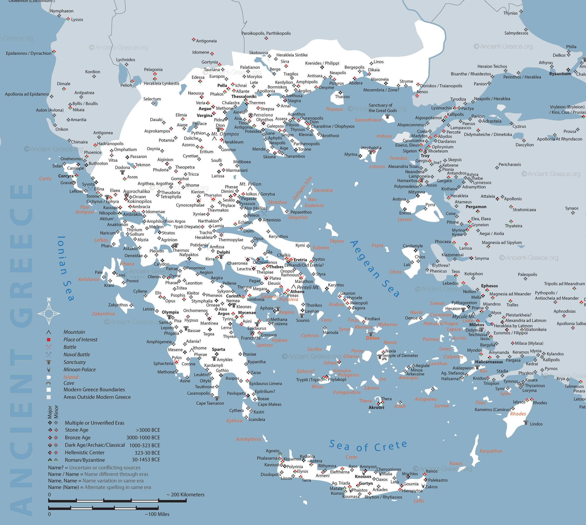
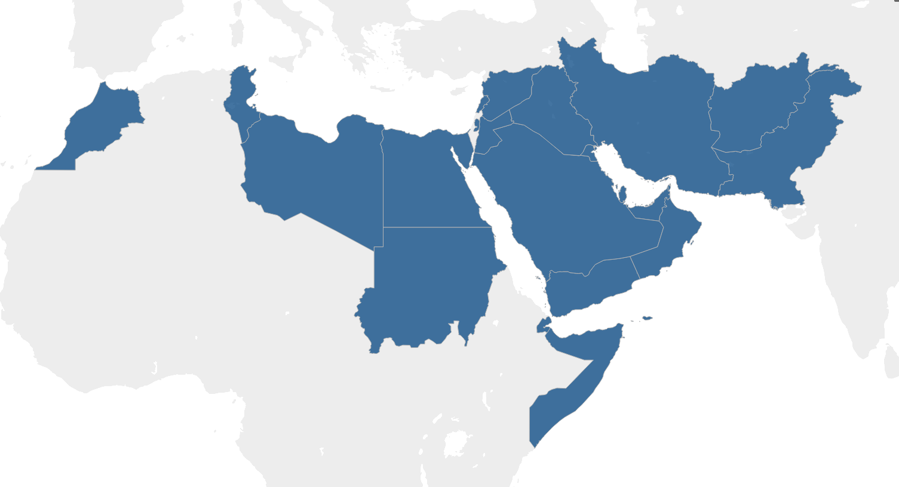
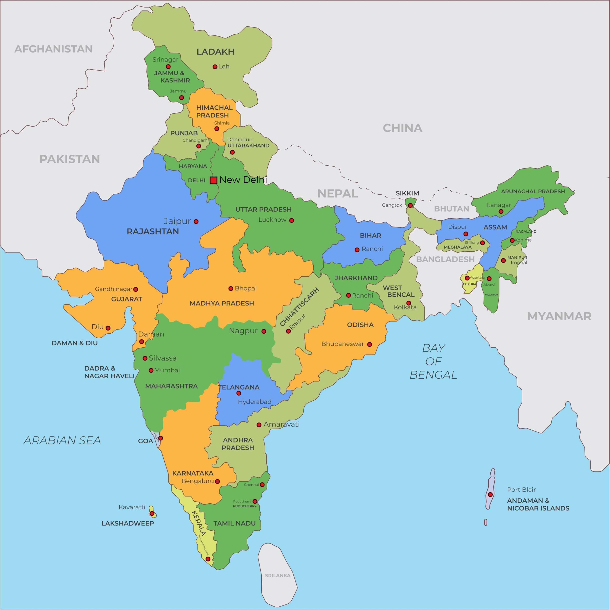
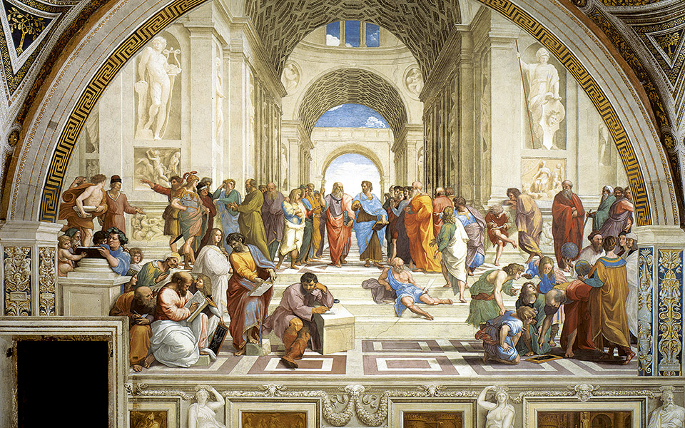

Aprenda mais sobre a história de Alexandre e a Macedônia explorando os catálogos principais no menu!
Unificação e controle da Grécia (336–335 a.C.)

Ao assumir o trono da Macedônia após o assassinato de seu pai, Alexandre, o Grande consolidou rapidamente seu poder e suprimiu revoltas das cidades gregas. A destruição de Tebas garantiu a submissão da maior parte da Grécia ao domínio macedônico.
Conquista da Ásia Menor (334–333 a.C.)

Após atravessar o Helesponto, Alexandre derrotou os persas na Batalha do Grânico. Com isso, conquistou grande parte da Ásia Menor (atual Turquia), libertando cidades gregas que estavam sob controle persa.
Vitória sobre Dario III (333 a.C.)

Na Batalha de Isso, Alexandre derrotou o rei persa Dario III, consolidando sua reputação como um dos maiores comandantes militares da Antiguidade.
Conquista do Mediterrâneo Oriental (332 a.C.)

Após o difícil Cerco de Tiro, Alexandre passou a controlar importantes portos do Mediterrâneo Oriental, assegurando o domínio naval da região e enfraquecendo definitivamente o poder persa no litoral.
Expedição à Índia

Alexandre atravessou o rio Indo e venceu o rei Poro na Batalha do Hidaspes, uma das mais famosas de sua carreira. Essa campanha levou o império macedônico ao seu ponto de maior extensão territorial.
Difusão da cultura helenística

Além das conquistas militares, Alexandre promoveu a expansão da cultura grega por três continentes. A fusão entre tradições gregas, egípcias, persas e orientais originou o Período Helenístico, um dos períodos culturais mais influentes da história antiga.